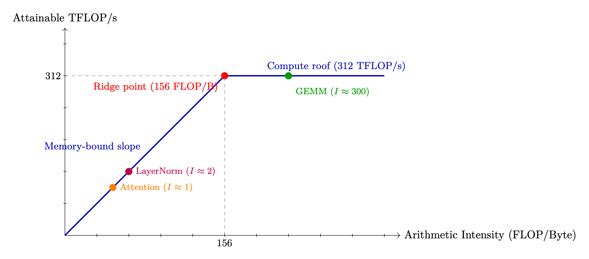
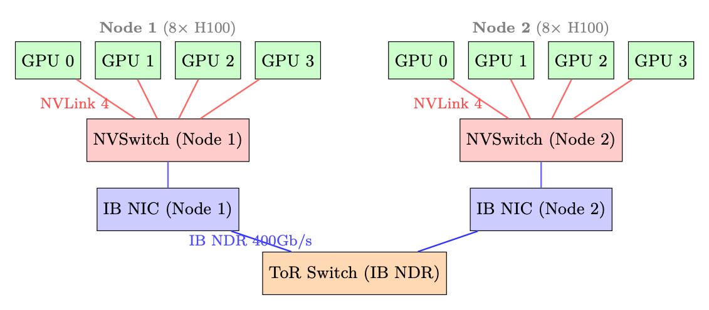

GPU 架构：从芯片到 LLM 训练
本节聚焦“GPU 架构：从芯片到 LLM 训练”的定义、机制与工程含义。
语言模型处理文本的基本离散单位。
以自注意力为核心的序列建模架构。
根据查询、键和值计算上下文加权表示的机制。
在状态下选择动作或生成 token 的概率分布。
模型在部署或测试时生成输出的过程。
LLM的系统基础
GPU 架构 – 从芯片到LLM训练
现代大型语言模型几乎完全在 GPU（图形处理器）上进行训练和服务 处理单元）。了解 GPU 架构对于做出明智的决策至关重要 并行策略、内存管理、内核优化和基础设施规模调整。这个 本节全面介绍了与 LLM 工作负载相关的 GPU 硬件。
为何使用 GPU 进行深度学习？
GPU 和 CPU 代表了根本不同的硬件理念。了解这一点 差异解释了为什么 LLM 训练在 GPU 上速度提高了 100-1000 倍。
CPU 与 GPU – 基本设计理念
• CPU 针对延迟进行了优化 – 它们尽可能快地执行几个线程，并且具有大量线程 缓存、分支预测器和乱序执行。现代 CPU 有 8-96 个核心。
• GPU 针对吞吐量进行了优化 – 它们并行执行数千个线程，每个线程 做简单的工作。现代 GPU 有数千个“核心”（执行单元），分为 流式多处理器 (SM)。
深度学习工作负载主要是矩阵乘法（O(n2) 上的 O(n3) 运算） 数据），这是令人尴尬的并行。 70B 型号的单Transformer前向传递 每个token需要 ∼140 TFLOP 的计算 – 非常适合 GPU 吞吐量。
NVIDIA GPU 微架构各代
NVIDIA 发布了一系列 GPU 架构，每种架构都为深度学习带来了关键创新：
用于 LLM 训练和推理的通用 GPU
选择哪种 GPU？
• 训练 70B+ 模型：具有 NVLink 的 H100/B200 节点（需要快速互连张量 并行性）。每个实例至少 8×H100。
• 推理（延迟敏感）：H100/H200 用于高带宽； MI300X 适用于内存限制 （巨大的KV 缓存）。
• 微调7B-13B：A100-80GB性价比高。带 LoRA 的单 GPU。
• 预算：7B 型号上的 LoRA 为 A100-40GB 甚至 A10 (24GB)。
表 2.1：深度学习的 NVIDIA GPU 微架构时间表。
建筑 年份 旗舰 深度学习关键创新
帕斯卡 2016年 P100 第一个 HBM GPU； FP16 支持； NVLink 1 沃尔特 2017年 V100 张量核心（第一代）； 混合精度训练 图灵 2018年 T4 INT8推理； RT 内核（不适用于 ML) 安培 2020年 A100 BF16 张量核心； TF32；第三代 NVLink；米格 料斗 2022年 H100 FP8 张量核心； TMA；反式 前发动机； NVLink 4 布莱克威尔 2024年 B200 第二代 Transformer 发动机； NVLink 5（1.8 TB/秒）； FP4
表 2.2：与 LLM 工作负载相关的 GPU 规格。所有带宽数字都是双向的。
图形处理器 拱门 HBM BF16 TF HBM 带宽 NVLink LLM角色
V100-32GB 沃尔特 32GB 125 TF* 900GB/秒 300GB/秒 遗产；小模型微调 A100-40GB 安培 40GB 312 TF 1.5TB/秒 600GB/秒 预算训练/推理 A100-80GB 安培 80GB 312 TF 2.0TB/秒 600GB/秒 标准 RLHF（70B 为 8–64） H100 SXM 料斗 80GB 990TF 3.35TB/秒 900GB/秒 训练速度提高 3 倍 H200SXM 料斗 141GB 990TF 4.8TB/秒 900GB/秒 在更少的 GPU 上适合 70B 策略+参考 B200 SXM 布莱克威尔 192GB 2250 TF 8.0TB/秒 1800GB/秒 下一代； H100 之上的 2 倍
AMD 和谷歌的替代方案： 米300X cDNA3 192GB 1300 吨 5.3TB/秒 不适用 大多数记忆； ROC TPU v5e 谷歌 16GB 197 TF 1.6TB/秒 ICI 1.6TB/秒 仅云；贾克斯/XLA
GPU 内部架构 – 流式多处理器 (SM)
GPU 被组织为流式多处理器 (SM) 阵列，其中每个处理器都是一个 具有自己的寄存器文件、共享内存和执行单元的独立处理器。理解 SM 是了解 GPU 性能的关键。
图 2.1：左：A100 上单个流式多处理器 (SM) 的内部结构 — 64 FP32 CUDA 核心、4 个张量核心、4 个扭曲调度程序、256 KB 寄存器文件和 192 KB 共享内存/L1 缓存。右： 完整的 A100 芯片包含 108 个 SM，具有共享的 40 MB L2 缓存和 80 GB HBM2e。带宽注释 （左边距）显示从寄存器到 HBM 的急剧下降。

关键 SM 组件
• CUDA 内核：用于FP32/INT32 操作的标量ALU。 A100 上每个 SM 为 64。用于 逐元素运算、归约和非矩阵运算。
• Tensor Cores: Specialized matrix-multiply-accumulate (MMA) units. Each performs a 4×4×4 fused multiply-add per cycle. 4 per SM on A100, delivering 16× throughput over CUDA cores for supported precisions.• 寄存器文件：最快的存储（1 个周期延迟）。在所有活动线程之间共享。溢出 到 L1 会导致明显的减速。
• 共享存储器/L1：由编程器显式管理的片上SRAM。关键 FlashAttention 的性能（图块完全适合共享内存）。
• Warp 调度器：每个SM 有4 个warp 调度器(A100)。一个 warp = 32 个线程执行同步（SIMT 模型）。调度程序通过在 warp 之间切换来隐藏内存延迟。
SIMT 执行模型 GPU 使用单指令、多线程 (SIMT) 执行。在一个经纱（32 个线程）内，所有 线程执行相同的指令但处理不同的数据。当线程发散时（例如，if/else）， 两条路径都是序列化的——称为扭曲发散。这就是为什么 GPU 内核必须最小化 分支。 对于LLM工作负载，主要操作（GEMM、attention、softmax）具有统一的控制流程 跨线程，使其成为 SIMT 执行的理想选择。
GPU 芯片跨代扩展
NVIDIA GPU 架构的演变显示了片上计算密度的持续扩展 内存和深度学习专用单元：
表 2.3：跨 NVIDIA 架构的 SM 级扩展。
建筑 短信 TC/SM 静态随机存储器/单模 L2 关键变化
沃尔特 (V100)
128KB 6MB 引入张量核心 安培 (A100)
192 KB 40MB BF16/TF32；更大的L2 料斗 (H100)
256KB 50MB TMA； FP8；线程块簇 布莱克威尔 (B200)
256KB 128MB 2× 模具； FP4； TMEM； NVLink 5
GPU 内存层次结构和带宽
现代 GPU 训练和推理性能几乎完全取决于您的表现 管理跨内存层次结构的数据移动。了解层次结构不是可选的 – 它是后面章节中讨论的每种优化技术的基础。
GPU 内存层次结构 – A100 80GB 参考号
级别 容量 带宽 延迟 地点
寄存器 ∼256 KB/SM >100 TB/秒 1个周期 片上、每线程 SRAM（共享） 164KB/SM ∼19TB/秒 ～20 周期 片上、每 SM 二级缓存 总共 40 MB ∼5TB/秒 ～200 周期 片上、共享 HBM2e（显存） 80GB 2TB/秒 ～200纳秒 包装上（5 层） 中央处理器 动态随机存取存储器 512GB+ ∼25 GB/秒 〜10微秒 主机（PCIe 4） NVMe固态硬盘 TB 7GB/秒 〜100微秒 主机存储
为什么差距这么大
层次结构的每一层都比它上面的一层慢大约 10 倍，大 100-1000 倍。 A100 的 BF16 张量核心吞吐量为 312 TFLOP/s，但 HBM 带宽仅为 2 TB/s。
That means for every byte loaded from HBM you can do 312×1012/(2×1012) ≈156 floating-point operations before the next byte arrives. If your kernel does fewer than 156 FLOPs per byte, it is memory-bound – the compute units are idle waiting for data.寄存器。 每个 CUDA 线程都可以访问私有寄存器文件。寄存器是最快的存储 在芯片上 – 读取和写入发生在单个时钟周期内，无需仲裁。 A100有 每个 SM 65,536 个 32 位寄存器。将寄存器溢出到本地内存（L1/L2）是一个主要性能 危险。
SRAM – 共享内存/L1。 每个 SM 都有一个 192 KB 的组合 L1/共享内存池 在 A100 上（在 H100 上为 256 KB），在 A100 上最多可配置 164 KB 作为共享内存。共享 内存由程序员（或较新的 CUDA 版本中的编译器）显式管理。 例如，FlashAttention 完全是围绕注意力平铺计算这一见解构建的 适合SRAM。
二级缓存。 A100 上的 40 MB L2 在所有 108 个 SM 之间共享。它充当之间的中转区 SRAM 和 HBM。对于具有良好空间局部性的工作负载（例如，重复访问的权重矩阵 跨批次），L2 命中率会显着降低有效 HBM 流量。
HBM – 高带宽内存。 HBM 是直接安装在 GPU 上的堆叠 DRAM 封装，通过宽中介层连接。 A100 SXM 具有 80 GB HBM2e，速率为 2 TB/s。的 H100 SXM5 具有 80 GB HBM3，速度为 3.35 TB/s。这是模型的主要工作记忆 权重、KV 缓存、激活和优化器状态。
通过 PCIe 的 CPU DRAM。 GPU HBM 和 CPU DRAM 之间的数据传输遍历 PCIe 总线。 PCIe Gen4 ×16 提供单向 ∼32 GB/s（双向 64 GB/s）； Gen5双打 这个。与 HBM（单向）相比，带宽减少了约 60 倍。 CPU卸载 （ZeRO-Infinity、DeepSpeed）利用此链接，但必须谨慎使用，以避免成为 瓶颈。
NVMe。 NVMe SSD（例如三星 990 Pro）可达到 ∼7 GB/s 的顺序读取速度。 ZeRO-Infinity 可以 将优化器状态卸载到 NVMe，但这仅在计算与 IO 比率非常高时才可行 （批量大，训练步骤慢）。
算术强度和 Roofline 模型
算术强度
我= 失败次数 从 HBM 访问的字节 （浮点运算数/字节）
当 I < Iridge 时，内核受内存限制；当 I > Iridge 时，内核受计算限制，其中
伊里奇= 峰值浮点运算/秒 峰值带宽 = 312 × 1012
2×1012 = 156 次浮点运算/字节 (A100 BF16)
注意力算术强度
For a single attention head with sequence length n = 4096, head dim d = 128: FLOPs: QKT costs 2n2d, softmax is O(n2), Attn × V costs 2n2d. Total: ≈4n2d = 4 × 40962 × 128 ≈8.6 GFLOP. Memory traffic (standard, non-Flash implementation):• Read Q, K: 2 × n × d × 2 = 2 MB• 写入注意力力分数 S = QKT : n2 × 2 = 33.5 MB图 2.2：A100 BF16 的车顶线模型。注意力深深地存在于记忆的束缚中；大型GEMM （FFN 层）受计算限制。
• 读取S 以获得softmax：n2 × 2 = 33.5 MB
• 写入softmax 输出P：n2 × 2 = 33.5 MB
• Read P and V for final matmul: n2 × 2 + n × d × 2 = 34.5 MB• 写入输出O：n × d × 2 = 1 MB
总内存：约 138 MB（由 n2 注意力矩阵上的 4 次传递支配）。 算术强度：
我=8.6×109
138 × 106 ≈62 浮点运算/字节
这是 A100 脊点的 62/156 = 40% — 牢牢受内存限制。 GPU 空闲率为 60% 等待记忆。 FlashAttention 修复：通过从不具体化 n × n 矩阵（在 SRAM 中平铺 Q、K、V），FlashAttention 将 HBM 流量减少为仅读取 Q、K、V 和写入 O：4 × n × d × 2 = 4 MB。每个 加载的字节在 O(n) 计算中重用（每个查询都会处理每个键），因此：
I = 4n2d 4 · n · d · 2 = n2 = 4096
= 2048 次浮点运算/字节
这是山脊点 (156) 以上 13 倍——深度计算限制。 GPU达到峰值312 TFLOPS，仅需要 312T/2048 约 152 GB/s 的带宽（HBM 容量的 7.6%）。内存 不再是瓶颈。
注意力是受记忆限制的； FFN 受计算限制
Transformer 中的两种状态
Transformer块有两个主要组件，它们的算术强度截然不同：
• 注意力：对n × d 张量进行操作。 QKT 产品是 O(n2d) FLOP，但需要 注意力分数的内存为 O(n2)。在长序列中，内存流量占主导地位 – 注意力是受记忆限制的。
• FFN (MLP)：两个大型线性层，其权重矩阵形状为[dmodel，4dmodel]。这些 是具有高算术强度的大型 GEMM – FFN 受计算限制。
这就是为什么FlashAttention（内存优化）有助于attention，但对FFN没有帮助，而量化 （减少权重大小）对 FFN 的帮助大于注意力。

张量核心
什么是张量核心？ Tensor Core 是 Volta (2017) 中引入的专用矩阵乘法累加 (MMA) 单元。 每个 Tensor Core 在单个时钟周期内执行 4 × 4 × 4 矩阵乘法：
D = A × B + C（4 × 4 矩阵）
A100 在 108 个 SM 中拥有 432 个 Tensor Core（每个 SM 4 个，每个子分区 1 个）。在BF16 它们提供 312 TFLOP/s 的精度，大约是 FP32 CUDA 内核吞吐量的 16 倍。
• 支持的精度：FP64、TF32、BF16、FP16、INT8、FP8 (H100+)。
• 累加：始终在 FP32 内部，即使对于 BF16 输入也是如此。这可以防止灾难性的 点积期间取消。
• 要求：当矩阵维度为 8 的倍数时，Tensor Core 效率最高 (BF16) 或 16 (FP8)。填充这些倍数通常是值得的。
• WGMMA (H100)：Hopper 引入了扭曲组级 MMA 指令，可在 更大的图块 (64×256×16)，并且可以使用 TMA（张量内存加速器）数据进行流水线处理 运动。
张量核心陷阱
Tensor Core 仅在您的内核受计算限制时才有帮助。如果您正在运行小批量（batch 大小 1，推理），GEMM 块很小，Tensor Core 利用率很低，你又回到了 记忆束缚的制度。这就是推理引擎积极批量请求的原因。
通信架构 – NVLink、InfiniBand 和 PCIe
分布式 LLM 训练和推理需要在 GPU 之间移动大量数据， 节点和存储。通信结构通常是大规模训练的瓶颈。
PCIe – 主机设备链路。
PCIe 世代
一代 x16 体重 （每个 目录） 双向 注释
PCIe 第三代 16GB/秒 32GB/秒 常见于较旧的服务器 PCIe Gen4 32GB/秒 64GB/秒 A100 PCIe，最新服务器 PCIe Gen5 64GB/秒 128GB/秒 H100 PCIe，新兴
PCIe 用于：
• CPU ↔GPU 数据传输（模型加载、CPU 卸载）
• NVLink 不可用时的跨节点 GPU 通信（罕见，非常慢）
• NVMe 存储访问（通过 CPU）
PCIe 不适用于 GPU-GPU 通信 如果 NVLink 可用，切勿通过 PCIe 路由 GPU-GPU 通信。 PCIe 带宽 (32 GB/s) 比 NVLink 4 (900 GB/s) 低 28 倍。在没有 NVLink 的多 GPU 服务器中（例如， 消费级 GPU），GPU 间带宽仅限于 PCIe，使得张量并行性极其有限 慢。
NVLink – 节点内高速互连。
NVLink 世代
一代 友情链接 总带宽 图形处理器
NVLink 2
300GB/秒 V100 NVLink 3
600GB/秒 A100 NVLink 4
900GB/秒 H100 NVLink 5
1800GB/秒 B200（布莱克威尔）
NVLink 是同一节点上 GPU 之间的点对点互连。每个链接都是双向的。 H100 SXM5 有 18 个 NVLink 4 链路，每个链路提供 50 GB/s 双向，总共 900 个 GB/秒。
NV 开关。 在 DGX H100 系统中，所有 8 个 GPU 均通过 NVSwitch（专用交换）连接 提供全二分带宽的芯片。这意味着任何 GPU 都可以与任何其他 GPU 通信 GPU 同时以全 NVLink 速度运行，而不仅仅是环中的邻居。
环形与全平分
在环形拓扑（8 个 GPU）中，AllReduce 需要数据绕环传输。每个链接必须 进位 2(N−1)
氮 占总数据的比例，因此算法带宽为 Blink × 氮 2(N−1) (约0.57×闪烁
N = 8）。通过 NVSwitch 全二分，AllReduce 可以同时使用基于树的所有链接算法，实现近峰值带宽。在 DGX H100 上的实践：环达到 ∼700 GB/s 总线带宽，NVSwitch 达到~900 GB/s。
InfiniBand – 节点间通信。 对于节点（服务器）之间的通信，Infini- Band 提供高带宽、低延迟网络以及直接 GPU 内存访问。
InfiniBand NDR
• NDR 400Gb/s = 每个端口 50 GB/s（单向）• HDR 200Gb/s = 每个端口 25 GB/s（上一代）• RDMA：远程直接内存访问 – GPU 可以读取/写入远程 GPU 内存 不涉及远程CPU
• GPUDirect RDMA: Data goes directly HBM →NIC →network →NIC →HBM, bypassing CPU and system DRAM entirely• 延迟：小消息约为 1–2 µs（TCP/IP 约为 100 µs）
胖树拓扑。 大型 GPU 集群使用胖树网络拓扑。 3 层胖树 k 端口交换机支持具有全平分带宽的 k3/4 节点。对于 400Gb/s NDR 交换机
k = 64 个端口：643/4 = 65,536 个节点。轨道优化拓扑。 在实践中，集群使用轨道优化的拓扑，其中每个 GPU 节点连接到不同的架顶交换机。这确保了 AllReduce 操作（其中 涉及所有 GPU）同时使用所有网络链接，从而最大化带宽。
分布式LLM训练中的沟通模式。 分布式训练依赖于 集体通信原语。原语的选择决定了带宽要求 和缩放行为。
通信原语
原始的 使用案例 体积
全部归约 梯度同步（DDP、FSDP） 2(N −1)/N× 参数大小 齐聚 收集 分片的 重量 (FSDP) (N −1)/N× 参数大小
减少分散 散点梯度 (FSDP) (N −1)/N× 参数大小 齐聚 张量并行激活 激活大小 点对点 流水线并行（发送/接收） 微批量激活 广播 体重同步（新工人） 全模型尺寸
带宽计算 – 70B 模型的梯度 AllReduce
设置：70B 参数模型，BF16 梯度，8 个节点 × 8 个 GPU = 64 个 GPU。数据并行度= 64。 渐变大小：70 × 109 × 2 字节 = 140 GB。 每个 GPU（环）的 AllReduce 体积：2 × (64 −1)/64 × 140 ≈275 GB。
节点间可用带宽：8 个 GPU/节点 × 50 GB/s/GPU = 400 GB/s（带轨优化拓扑，所有 8 个 NIC 均处于活动状态）。 AllReduce 时间：275/400 ≈0.69 秒每步。 含义：对于 1 秒的计算步骤，通信增加了 0.69 秒（总时间的 41%） 步时间）。 这就是为什么梯度压缩、混合精度和 FSDP（它们重叠） 与计算的通信）至关重要。
网络拓扑图。 下图展示了一个典型的两节点GPU集群 显示节点内 (NVLink) 和节点间 (InfiniBand) 通信路径的拓扑。
图 2.3：两节点 8-GPU 拓扑。节点内：通过 NVSwitch 的 NVLink 4（总共 900 GB/s）。节点间： 通过架顶交换机实现 InfiniBand NDR 400Gb/s。每个节点都有 8 个 IB NIC（每个 GPU 一个），用于轨道优化 全部减少。
根据带宽选择并行度
• 张量并行性 (TP)：要求每一层全部归约 – 仅在节点内使用
NVLink。 TP=8 是 H100 DGX 节点的标准。• 流水线并行性 (PP)：阶段之间的点对点 – 可以跨节点，但会增加 流水线气泡开销。当模型对于 TP 来说太大时使用。
• 数据并行性(DP)：梯度AllReduce – 可以通过IB 跨节点。可以很好地扩展 快速IB。
• FSDP/ZeRO：AllGather + ReduceScatter – 与DP 类似，但分片优化器状态。 对于大型模型，优先于 DP。

vLLM：PagedAttention 与高吞吐推理
本节聚焦“vLLM：PagedAttention 与高吞吐推理”的定义、机制与工程含义。
语言模型处理文本的基本离散单位。
根据查询、键和值计算上下文加权表示的机制。
保存经验、轨迹或中间数据以供训练和分析的结构。
模型在部署或测试时生成输出的过程。
通过旋转变换注入相对位置信息的位置编码方法。
vLLM – PagedAttention 和高吞吐量推理
vLLM [157] 引入了 PagedAttention，它借用了操作系统的分页抽象 用于 RAM 并将其应用于 GPU 的 KV 缓存。在 LLM 推理期间，KV 缓存 – 所有先前token的存储键和值张量 - 是主要的内存消耗者。管理 高效是高通量推理的核心挑战。
KV 缓存碎片问题
KV 缓存公式
对于具有 L 层、H 个头、头尺寸 d 和 n 个标记序列的模型：
KV cache size = 2 × L × H × d × n × bytes_per_elementFor Llama-3 70B (BF16): L = 80, H = 8 (GQA), d = 128:= 2 × 80 × 8 × 128 × n × 2 = 327,680 × n bytes当 n = 4096 个标记时：每个序列约 1.3 GB。内部和外部碎片
传统推理系统为每个序列的KV预先分配一个连续的内存块 缓存，大小为最大可能的序列长度。这会导致两种类型的浪费： 内部碎片：仅生成 500 个token的序列仍保留保留的块 4096 个token。未使用的3596个token槽被浪费了。 外部碎片：许多序列完成后，空闲内存由许多 小的不连续的间隙。即使总可用内存已满，也无法分配新的长序列 足够了，因为没有一个连续的块足够大。 在实践中，简单分配的 GPU 内存利用率通常仅为 20-40%。
PagedAttention – KV 缓存的虚拟内存
PagedAttention（Kwon 等人，2023）借用了操作系统的分页抽象。相反 每个序列一个连续的块，KV 缓存被划分为固定大小的页面（块），并且 间接表（类似于 CPU 页表）转换每个序列的token位置 到分散的物理 GPU 内存地址中。
PagedAttention 核心概念
• Block size: Typically 16 tokens per block (tunable). Each block stores 16 × 2 × L × H × d elements.• 块表：从logits块索引到物理块索引的每序列映射 GPU 内存池。
• 物理块池：固定大小块的预分配池。分配是 O(1) – 只是 从空闲列表中弹出。
• 注意力内核：修改为从非连续的物理位置收集 KV 块 在注意力计算期间使用块表。
块表示例
假设块大小 = 4 个token，我们有两个序列：
• 序列A（7 个token）：logits块[0,1]→物理块[3, 7]
• 序列B（5 个token）：logits块[0,1]→物理块[1, 5]
物理块 3 持有序列 A 的token 0-3。物理块 7 持有序列 A 的token 4-6
（部分填充）。序列 A 的注意力内核按顺序从物理块 3 和 7 读取， using the block table as an indirection layer.
PagedAttention 的好处
近乎零浪费。 内部碎片的边界是每个块最多有一个部分填充的块 sequence (the last block).对于块大小 16，最坏情况下的浪费是每个序列 15 个token——可以忽略不计。 由于块是固定大小且可互换的，因此消除了外部碎片。
动态分配。 随着序列的增长，块会按需分配。无需知道 the final sequence length in advance.这对于输出长度未知的生成至关重要。
前缀共享（写时复制）。 多个序列共享一个公共前缀（例如，一个系统 提示）可以共享该前缀的相同物理块。 The block table simply points multiple sequences to the same physical blocks.当序列需要写入共享块时（发散
from the prefix), a copy-on-write is triggered.前缀共享节省
在具有 1000 个token系统提示并为 128 个并发用户提供服务的聊天机器人中：
• Without prefix sharing: 128× 1000 × 327,680/109 ≈42 GB just for system prompt KV cache• With prefix sharing: 1 × 1000 × 327,680/109 ≈0.33 GB• 节省：共享前缀部分约 128 倍
通过交换抢占。 当 GPU 内存耗尽时，vLLM 可以通过以下方式抢占序列 将其 KV 块交换到 CPU DRAM（或者干脆丢弃它们并稍后重新计算）。这是 唯一可行的原因是块是独立的且不连续的——交换连续的分配 需要复制整个缓冲区。
连续配料
传统批处理（“静态批处理”）会等到批处理中的所有序列完成后才开始 新的。如果一个序列生成 500 个token，另一序列生成 10 个，则 GPU 空闲 490 短序列上的步骤。这是极其浪费的。
连续配料
连续批处理（也称为迭代级调度）一次处理一个解码步骤。 每一步之后：
1.检查哪些序列已经完成（生成EOStoken）
2. 从批次中删除已完成的序列，释放其 KV 块
3. 添加新的等待序列来填充空闲的槽位
4. 使用更新的批次运行下一个解码步骤
批次组成每一步都会发生变化 - 序列动态加入和离开。这保持 GPU 利用率接近 100%，并显着提高吞吐量（比静态批处理提高 1.5–3 倍）。 PagedAttention 在这里至关重要：在批次中添加/删除序列需要动态 KV 块分配/释放，仅对分页内存有效。
vLLM 中的推测解码
推测性解码使用小型草稿模型（例如 1B 个参数）来提出 k 个候选标记 快速，大型目标模型在一次前向传递中验证这一点。直到第一个为止的所有token 拒绝被接受（预期接受：每个验证步骤 3-5 个token）。这产生 2–3× 加速延迟敏感的单序列生成，而不会造成任何质量损失。 vLLM 将推测性解码与 PagedAttention 集成：
• 草案token被分配投机KV 区块
• 拒绝时，推测块被释放（分页分配便宜）
• 接受后，推测区块将提升至主序列
• 块表更新是 O(k) – 只需更新一些表条目
具体内存节省 – 70B 规模模型
内存预算 – 70B BF16 推理
设置：Llama-3 70B、BF16、单个 A100 80GB 节点（8 个 GPU、张量并行）。
模型权重：70 × 109 × 2 字节 = 140 GB ÷ 8 个 GPU = 17.5 GB/GPU。剩余的 KV 缓存：80 −17.5 −3（开销）= 59.5 GB/GPU。
每个 GPU 每个 token 的 KV 缓存（TP=8，每个 GPU 拥有 1/8 头）： 2×80×1×128×2 =40,960 字节 ≈40 KB/token。 KV 缓存中的最大token数：59.5 × 109/40,960 ≈145万个token。 有 128 个并发序列，每个序列有 4096 个token：128 × 4096 = 524,288 个token – 好吧 在预算之内。 没有PagedAttention（为每个预先分配最大长度4096）：相同的数学，但是fragmen- 平均浪费约 50%→只有 64 个序列适合。
块大小权衡 较大的块大小可以减少块表的开销并提高内存访问局部性 （更少的分散阅读）。较小的块大小可减少内部碎片并实现更细粒度 前缀共享。 vLLM 默认为 16 个token/块，这是一个很好的平衡。对于很长的序列 （100K+ token），较大的区块（32-64）可能更可取。
vLLM：端到端系统
vLLM 将 PagedAttention 包装在一个完整的服务堆栈中：连续批处理、前缀缓存、推测 本地解码和张量并行模型分片一起工作，以最大化每个吞吐量 GPU 美元。
架构概述
核心组件
• API 服务器：接受OpenAI 兼容请求（完成、聊天）。对输入进行标记并 创建“序列组”（用于波束搜索或多个样本）。
• 调度程序：vLLM 的大脑。维护三个队列：
– waiting：新请求尚未开始（预填充待处理）
– running：主动生成token（解码阶段）
– swapped：KV 缓存被卸载到CPU的抢占请求
每次迭代，调度程序都会根据可用 GPU 内存决定运行哪些请求 块。
图 2.4：vLLM 架构：请求自上而下流动。调度程序管理准入和抢占， 块管理器处理虚拟到物理的 KV 缓存映射（如操作系统页表），模型 执行器从 GPU HBM 中的预分配块池中运行批量推理读取。
• 块管理器：实现KV 缓存的虚拟内存抽象。映射logits 块（每个序列）到物理块（在 GPU 内存池中）。手柄：
– 分配（生成新token→需要新区块）
– 写入时复制（用于波束搜索：多个波束共享前缀块，仅在不同的波束上复制 根斯）
– 交换（抢占/恢复时 GPU ↔CPU 迁移）
– 前缀缓存（当提示共享公共前缀时重用缓存块）
• 模型执行器：运行实际的LLM 前向传递。管理跨区域的张量并行性 GPU 调度从分页 KV 缓存块读取的注意力内核。
• KV Cache Pool: Pre-allocated GPU memory divided into fixed-size blocks (default: 16 tokens × num_heads × head_dim × 2 bytes per block). No dynamic allocation at runtime → zero fragmentation.请求生命周期（端到端流程）
1.到达：客户端发送提示。 API 服务器将其分词，创建一个 SequenceGroup，将其放入 等待队列。
2. 调度：在每一步，调度程序运行：
(a) 检查是否可以恢复任何交换的序列（足够的空闲块）。
(b) 检查是否有任何等待序列可以开始预填充（足够的块用于完整提示）。
(c) 跨运行序列预算剩余块（每个序列需要 1 个新块） 如果当前块已满，则执行步骤）。
(d) 如果超出预算：抢占最低优先级的运行序列（将 KV 交换到 CPU 或重新计算 稍后）。
3. 预填充（请求的第一次迭代）：整个提示在一次前向传递中进行处理。电压 为所有提示标记计算缓存并存储在分配的块中。这是受计算限制的 （大批量token）。

4. 解码（后续迭代）：每个序列每个步骤生成一个新标记。全部运行 序列被批处理在一起（连续批处理）。这是内存限制的（读取完整的 KV 缓存，生成 1 个token）。
5. 块分配：在每个解码步骤之后，如果序列的最后一个块已满，则该块 管理器分配一个新的物理块并将其映射到下一个logits块。
6. 完成：当序列达到 EOS 或最大长度时，将从运行中删除。其 物理块立即释放→可用于其他序列。响应已流式传输 返回给客户端。
前缀缓存（自动提示缓存）
当多个请求共享一个公共前缀时（系统提示符，少数示例）：
1. 对每个logits块的 token 内容进行哈希处理。
2. 新请求到达时，检查缓存中是否已存在任何前缀块。
3. 如果命中：跳过这些token的预填充，直接重用物理 KV 块。首次token掉落时间 戏剧性地。
4. 驱逐：LRU 政策。仅当内存压力需要时才释放缓存块。
影响：对于具有较长系统提示的聊天应用程序（所有用户共享 2K+ token）， 前缀缓存可将 TTFT 减少 60-80%。
vLLM 中的引导（约束）解码
vLLM 通过可插拔后端原生支持约束解码（第 1.12.11 节），从而使 以最小的性能开销保证服务时的结构化输出。
支持的约束类型。 OpenAI兼容的API通过guided_*接受约束 参数或response_format字段：
from
openai
import
OpenAI
client = OpenAI(base_url="http :// localhost :8000/ v1")# --- JSON
Schema
constraint
---
response = client.chat.completions.create(model="meta -llama/Llama -3-70B-Instruct",
messages =[{"role": "user","content": "Extract: name , age , city from: ""’John is 30 and lives in NYC’"}],
extra_body ={"guided_json": {"type": "object",
"properties": {"name": {"type": "string"},
"age": {"type": "integer"},
"city": {"type": "string"}
},
"required": ["name", "age", "city"]
}
}
)
# Output is guaranteed
valid
JSON
matching
the schema# --- Regex
constraint
---
response = client.completions.create(model="meta -llama/Llama -3-70B-Instruct",
prompt="Generate an IPv4
address: ",extra_body ={"guided_regex": r"\d{1 ,3}\.\d{1 ,3}\.\d{1 ,3}\.\d{1 ,3}"
}
)# --- Choice
constraint
---
response = client.completions.create(model="meta -llama/Llama -3-70B-Instruct",
prompt="Sentiment: ",
extra_body ={"guided_choice": ["positive", "negative", "neutral"]}
)后端架构。 vLLM 将掩码计算委托给后端引擎：
• XGrammar（自 v0.7 起默认）：支持 JSON 模式的下推自动机引擎， 正则表达式和任意 EBNF 语法。由于高效的 C++，复杂模式的速度最快 核心。
• 概要[115]：基于FSM；支持 JSON 和正则表达式。当 XGrammar 时用作后备 不可用。
在模型的前向传递生成 logits 之后、采样之前应用掩码 - 添加 实际上每步 <1 毫秒，因为 FSM/PDA 状态转换和预先计算的索引查找是 O(1)。
性能影响。 因为约束仅屏蔽了 logits（没有重新计算注意力 或 FFN），吞吐量损失可以忽略不计（基准测试测试中<2%）。主要成本是编译 将模式转换为 FSM/PDA 索引，这需要 0.5-5 秒，具体取决于模式复杂性。 vLLM 缓存 跨请求编译模式，因此每个唯一模式需要支付一次此成本。
结构化输出̸=正确输出
约束解码保证输出在语法上有效（解析为 JSON，匹配 模式类型）。它不能保证语义正确性——模型仍然可能产生幻觉值 解析正确但实际上是错误的。始终验证下游的业务logits。
表 2.4：vLLM 性能与替代方案（70B 模型，A100 × 4，TP=4）。公制 LLM 高频产生 为什么
吞吐量（托克/秒） 2,500–4,000 300–600 连续配料+PagedAtten- 的 内存利用率 90–95% 50–60% 零碎片、动态块 分配 最大并发 seq 数 200–500 16–32 分页KV消除了per-seq预留 休假 首次token时间 100–300毫秒 500–2000毫秒 重复系统的前缀缓存 提示